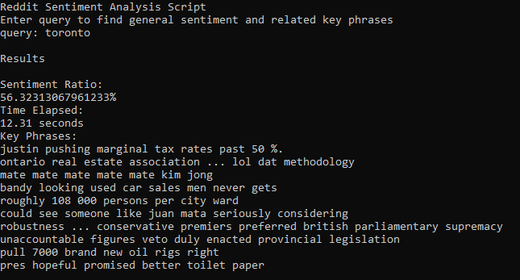

Here's are some of my projects:
Discord Plays X

Project Description:
Inspired by TwitchPlaysPokemon, I decided to recreate the functionality using the VoIP platform, Discord. Using Discord4J, a Java wrapper for Discord's API, I created a bot that listened for specific commands posted to a Discord channel. These commands were mapped to keystrokes on a computer, which controlled an emulator. This allowed users to collaboratively play a game, à la TwitchPlaysPokemon.
Reddit Sentiment Analysis
Project Description:
This project gets a particular search query from the user, and scans Reddit comments to find the general sentiment about the topic. Additionally, using Natural Language Processing Kit, it scans and outputs the top 10 key phrases associated with the query.